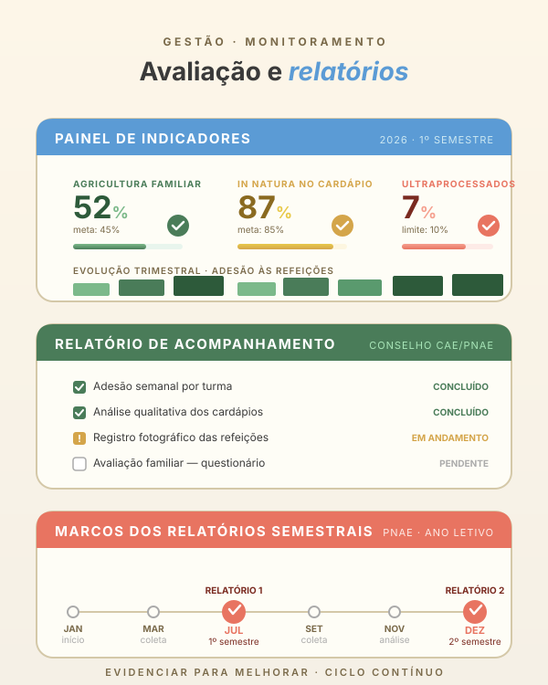

GestãoAvaliação e
10
Avaliação e
monitoramento
Evidenciar para melhorar sempre. Uma prática sem avaliação é uma prática sem reflexão — e o Programa Nacional de Alimentação Escolar (PNAE) exige relatórios semestrais.

Seis instrumentos
Como evidenciar o trabalho.
Quatro indicadores
O que medimos.
“Alimentação é currículo — cada refeição é uma oportunidade de aprender.”
Manual Pedagógico · PAE-DF